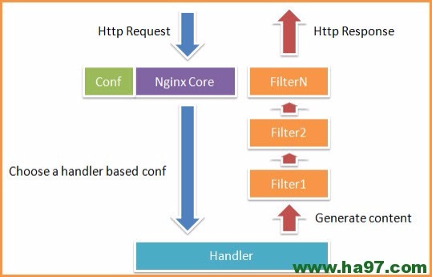

PS：Nginx/LVS/HAProxy是目前使用最广泛的三种负载均衡软件，本人都在多个项目中实施过，参考了一些资料，结合自己的一些使用经验，总结一下。
一般对负载均衡的使用是随着网站规模的提升根据不同的阶段来使用不同的技术。具体的应用需求还得具体分析，如果是中小型的Web应用，比如日PV小于1000万，用Nginx就完全可以了；如果机器不少，可以用DNS轮询，LVS所耗费的机器还是比较多的；大型网站或重要的服务，且服务器比较多时，可以考虑用LVS。
一种是通过硬件来进行进行，常见的硬件有比较昂贵的F5和Array等商用的负载均衡器，它的优点就是有专业的维护团队来对这些服务进行维护、缺点就是花销太大，所以对于规模较小的网络服务来说暂时还没有需要使用；另外一种就是类似于Nginx/LVS/HAProxy的基于Linux的开源免费的负载均衡软件，这些都是通过软件级别来实现，所以费用非常低廉。
目前关于网站架构一般比较合理流行的架构方案：Web前端采用Nginx/HAProxy+Keepalived作负载均衡器；后端采用MySQL数据库一主多从和读写分离，采用LVS+Keepalived的架构。当然要根据项目具体需求制定方案。
下面说说各自的特点和适用场合。
一、Nginx
Nginx的优点是：
1、工作在网络的7层之上，可以针对http应用做一些分流的策略，比如针对域名、目录结构，它的正则规则比HAProxy更为强大和灵活，这也是它目前广泛流行的主要原因之一，Nginx单凭这点可利用的场合就远多于LVS了。
2、Nginx对网络稳定性的依赖非常小，理论上能ping通就就能进行负载功能，这个也是它的优势之一；相反LVS对网络稳定性依赖比较大，这点本人深有体会；
3、Nginx安装和配置比较简单，测试起来比较方便，它基本能把错误用日志打印出来。LVS的配置、测试就要花比较长的时间了，LVS对网络依赖比较大。
3、可以承担高负载压力且稳定，在硬件不差的情况下一般能支撑几万次的并发量，负载度比LVS相对小些。
4、Nginx可以通过端口检测到服务器内部的故障，比如根据服务器处理网页返回的状态码、超时等等，并且会把返回错误的请求重新提交到另一个节点，不过其中缺点就是不支持url来检测。比如用户正在上传一个文件，而处理该上传的节点刚好在上传过程中出现故障，Nginx会把上传切到另一台服务器重新处理，而LVS就直接断掉了，如果是上传一个很大的文件或者很重要的文件的话，用户可能会因此而不满。
5、Nginx不仅仅是一款优秀的负载均衡器/反向代理软件，它同时也是功能强大的Web应用服务器。LNMP也是近几年非常流行的web架构，在高流量的环境中稳定性也很好。
6、Nginx现在作为Web反向加速缓存越来越成熟了，速度比传统的Squid服务器更快，可以考虑用其作为反向代理加速器。
7、Nginx可作为中层反向代理使用，这一层面Nginx基本上无对手，唯一可以对比Nginx的就只有lighttpd了，不过lighttpd目前还没有做到Nginx完全的功能，配置也不那么清晰易读，社区资料也远远没Nginx活跃。
8、Nginx也可作为静态网页和图片服务器，这方面的性能也无对手。还有Nginx社区非常活跃，第三方模块也很多。
淘宝的前端使用的Tengine就是基于nginx做的二次开发定制版。
Nginx常规的HTTP请求和响应流程图：

Nginx的缺点是：
1、Nginx仅能支持http、https和Email协议，这样就在适用范围上面小些，这个是它的缺点。
2、对后端服务器的健康检查，只支持通过端口来检测，不支持通过url来检测。不支持Session的直接保持，但能通过ip_hash来解决。
二、LVS
LVS：使用Linux内核集群实现一个高性能、高可用的负载均衡服务器，它具有很好的可伸缩性（Scalability)、可靠性（Reliability)和可管理性（Manageability)。
LVS的优点是：
1、抗负载能力强、是工作在网络4层之上仅作分发之用，没有流量的产生，这个特点也决定了它在负载均衡软件里的性能最强的，对内存和cpu资源消耗比较低。
2、配置性比较低，这是一个缺点也是一个优点，因为没有可太多配置的东西，所以并不需要太多接触，大大减少了人为出错的几率。
3、工作稳定，因为其本身抗负载能力很强，自身有完整的双机热备方案，如LVS+Keepalived，不过我们在项目实施中用得最多的还是LVS/DR+Keepalived。
4、无流量，LVS只分发请求，而流量并不从它本身出去，这点保证了均衡器IO的性能不会收到大流量的影响。
5、应用范围比较广，因为LVS工作在4层，所以它几乎可以对所有应用做负载均衡，包括http、数据库、在线聊天室等等。
LVS DR(Direct Routing)模式的网络流程图：

LVS的缺点是：
1、软件本身不支持正则表达式处理，不能做动静分离；而现在许多网站在这方面都有较强的需求，这个是Nginx/HAProxy+Keepalived的优势所在。
2、如果是网站应用比较庞大的话，LVS/DR+Keepalived实施起来就比较复杂了，特别后面有Windows Server的机器的话，如果实施及配置还有维护过程就比较复杂了，相对而言，Nginx/HAProxy+Keepalived就简单多了。
三、HAProxy
HAProxy的特点是：
1、HAProxy也是支持虚拟主机的。
2、HAProxy的优点能够补充Nginx的一些缺点，比如支持Session的保持，Cookie的引导；同时支持通过获取指定的url来检测后端服务器的状态。
3、HAProxy跟LVS类似，本身就只是一款负载均衡软件；单纯从效率上来讲HAProxy会比Nginx有更出色的负载均衡速度，在并发处理上也是优于Nginx的。
4、HAProxy支持TCP协议的负载均衡转发，可以对MySQL读进行负载均衡，对后端的MySQL节点进行检测和负载均衡，大家可以用LVS+Keepalived对MySQL主从做负载均衡。
5、HAProxy负载均衡策略非常多，HAProxy的负载均衡算法现在具体有如下8种：
① roundrobin，表示简单的轮询，这个不多说，这个是负载均衡基本都具备的；
② static-rr，表示根据权重，建议关注；
③ leastconn，表示最少连接者先处理，建议关注；
④ source，表示根据请求源IP，这个跟Nginx的IP_hash机制类似，我们用其作为解决session问题的一种方法，建议关注；
⑤ ri，表示根据请求的URI；
⑥ rl_param，表示根据请求的URl参数’balance url_param’ requires an URL parameter name；
⑦ hdr(name)，表示根据HTTP请求头来锁定每一次HTTP请求；
⑧ rdp-cookie(name)，表示根据据cookie(name)来锁定并哈希每一次TCP请求。
四、总结
Nginx和LVS对比的总结：
1、Nginx工作在网络的7层，所以它可以针对http应用本身来做分流策略，比如针对域名、目录结构等，相比之下LVS并不具备这样的功能，所以Nginx单凭这点可利用的场合就远多于LVS了；但Nginx有用的这些功能使其可调整度要高于LVS，所以经常要去触碰触碰，触碰多了，人为出问题的几率也就会大。
2、Nginx对网络稳定性的依赖较小，理论上只要ping得通，网页访问正常，Nginx就能连得通，这是Nginx的一大优势！Nginx同时还能区分内外网，如果是同时拥有内外网的节点，就相当于单机拥有了备份线路；LVS就比较依赖于网络环境，目前来看服务器在同一网段内并且LVS使用direct方式分流，效果较能得到保证。另外注意，LVS需要向托管商至少申请多一个ip来做Visual IP，貌似是不能用本身的IP来做VIP的。要做好LVS管理员，确实得跟进学习很多有关网络通信方面的知识，就不再是一个HTTP那么简单了。
3、Nginx安装和配置比较简单，测试起来也很方便，因为它基本能把错误用日志打印出来。LVS的安装和配置、测试就要花比较长的时间了；LVS对网络依赖比较大，很多时候不能配置成功都是因为网络问题而不是配置问题，出了问题要解决也相应的会麻烦得多。
4、Nginx也同样能承受很高负载且稳定，但负载度和稳定度差LVS还有几个等级：Nginx处理所有流量所以受限于机器IO和配置；本身的bug也还是难以避免的。
5、Nginx可以检测到服务器内部的故障，比如根据服务器处理网页返回的状态码、超时等等，并且会把返回错误的请求重新提交到另一个节点。目前LVS中 ldirectd也能支持针对服务器内部的情况来监控，但LVS的原理使其不能重发请求。比如用户正在上传一个文件，而处理该上传的节点刚好在上传过程中出现故障，Nginx会把上传切到另一台服务器重新处理，而LVS就直接断掉了，如果是上传一个很大的文件或者很重要的文件的话，用户可能会因此而恼火。
6、Nginx对请求的异步处理可以帮助节点服务器减轻负载，假如使用apache直接对外服务，那么出现很多的窄带链接时apache服务器将会占用大 量内存而不能释放，使用多一个Nginx做apache代理的话，这些窄带链接会被Nginx挡住，apache上就不会堆积过多的请求，这样就减少了相当多的资源占用。这点使用squid也有相同的作用，即使squid本身配置为不缓存，对apache还是有很大帮助的。
7、Nginx能支持http、https和email（email的功能比较少用），LVS所支持的应用在这点上会比Nginx更多。在使用上，一般最前端所采取的策略应是LVS，也就是DNS的指向应为LVS均衡器，LVS的优点令它非常适合做这个任务。重要的ip地址，最好交由LVS托管，比如数据库的 ip、webservice服务器的ip等等，这些ip地址随着时间推移，使用面会越来越大，如果更换ip则故障会接踵而至。所以将这些重要ip交给 LVS托管是最为稳妥的，这样做的唯一缺点是需要的VIP数量会比较多。Nginx可作为LVS节点机器使用，一是可以利用Nginx的功能，二是可以利用Nginx的性能。当然这一层面也可以直接使用squid，squid的功能方面就比Nginx弱不少了，性能上也有所逊色于Nginx。Nginx也可作为中层代理使用，这一层面Nginx基本上无对手，唯一可以撼动Nginx的就只有lighttpd了，不过lighttpd目前还没有能做到 Nginx完全的功能，配置也不那么清晰易读。另外，中层代理的IP也是重要的，所以中层代理也拥有一个VIP和LVS是最完美的方案了。具体的应用还得具体分析，如果是比较小的网站（日PV小于1000万），用Nginx就完全可以了，如果机器也不少，可以用DNS轮询，LVS所耗费的机器还是比较多的；大型网站或者重要的服务，机器不发愁的时候，要多多考虑利用LVS。
现在对网络负载均衡的使用是随着网站规模的提升根据不同的阶段来使用不同的技术：
第一阶段：利用Nginx或HAProxy进行单点的负载均衡，这一阶段服务器规模刚脱离开单服务器、单数据库的模式，需要一定的负载均衡，但是仍然规模较小没有专业的维护团队来进行维护，也没有需要进行大规模的网站部署。这样利用Nginx或HAproxy就是第一选择，此时这些东西上手快， 配置容易，在七层之上利用HTTP协议就可以。这时是第一选择。
第二阶段：随着网络服务进一步扩大，这时单点的Nginx已经不能满足，这时使用LVS或者商用Array就是首要选择，Nginx此时就作为LVS或者Array的节点来使用，具体LVS或Array的是选择是根据公司规模和预算来选择，Array的应用交付功能非常强大，本人在某项目中使用过，性价比也远高于F5，商用首选！但是一般来说这阶段相关人才跟不上业务的提升，所以购买商业负载均衡已经成为了必经之路。
第三阶段：这时网络服务已经成为主流产品，此时随着公司知名度也进一步扩展，相关人才的能力以及数量也随之提升，这时无论从开发适合自身产品的定制，以及降低成本来讲开源的LVS，已经成为首选，这时LVS会成为主流。
最终形成比较理想的基本架构为：Array/LVS — Nginx/Haproxy — Squid/Varnish — AppServer。
永久链接 : http://www.ha97.com/5646.html
感谢博主的总结，一直都很关注博主博客。受益匪浅。这里貌似有个小笔误。
“LVS需要向托管商至少申请多一个ip来做Visual IP” ，应该是virtual IP~~~
好文章。
不过对于 HAProxy，static-rr 是简单的轮询，选择 server 的逻辑最为简单。而 roundrobin 其实是高级一点的轮询，支持 HAProxy 运行期间动态修改 server weight。
不管是 static-rr， roundrobin 还是 leastconn，都是天然支持 weight 的。只是运行期间，static-rr 的 server weight 不可更改或者更改了也无效。所有 weight 为 1 的情形本身就是 weight-based 负载均衡算法的特例。
HAProxy 缺点没有介绍。结合个人对 Nignx 的部分了解，列举一些 HAProxy 不及 Nginx 的地方，仅供参考：
1. 不支持 POP/SMTP 协议
2. 不支持 SPDY 协议
3. 不支持 HTTP cache 功能。现在不少开源的 lb 项目，都或多或少具备 HTTP cache 功能。
4. 重载配置的功能需要重启进程，虽然也是 soft restart，但没有 Nginx 的 reaload 更为平滑和友好。
5. 多进程模式支持不够好。
用户上传一个文件，而处理该上传的节点刚好在上传过程中出现故障，Nginx会把上传切到另一台服务器重新处理，而LVS就直接断掉了，如果是上传一个很大的文件或者很重要的文件的话，用户可能会因此而不满。我想要问一下，对于这种情况有没有什么好点的解决办法？
.用户上传文件，后台rs正好故障，nginx会切换到另一台服务器重新处理，lvs则直接断掉，我也在纠结这个问题，所以想请教下，有没有什么好点的办法？
.当用户正在上传文件，如果后面RS突然故障，nginx会把请求发放给另一台RS来重新处理，而LVS则直接断掉，对于这种情况，因为我做的不多，请教下博主，有没有什么好点的办法呢？
.学习了，不错。就是感觉比较重复。
希望能有具体一些的数据来进行说明！
谢谢！
.有些重复，希望可以列举写具体的测试数据来进行比较。谢谢！
.你好，nginx在前端做负载均衡，转发到后端，但我后端tomcat来处理静态文件和上传的图片不太合理把，需要在tomcat前面再加一个nginx或apache来过滤静态文件吗？ 因为像我的图片是上传到tomcat所在服务器的，最前端的nginx没办法访问。
.